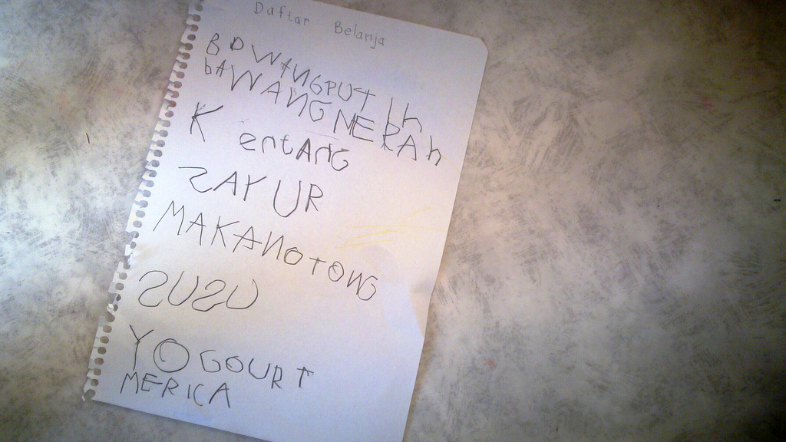

Persepsi Publik
- Hak dan aturan akses
- Pencarian
- Kontrol kualitas
- Partisipasi publik
- Bentuk dan format data
Kenapa
harus dibuka dan penting?
- Pihak "luar" mungkin dapat memberi nilai tambah
- Tidak semua dapat dikerjakan sendiri
Persepsi Publik
Hak dan aturan akses
Birokrasi, situs instansi
Persepsi Publik
Pencarian
Sulit untuk mencari data yang spesifik
Persepsi Publik
Bentuk dan format data
.pdf, cetak ; sudah matang, misalnya statistik
Persepsi Publik
Kontrol Kualitas dan partisipasi publik
satu pihak, mekanisme umpan balik dan pembaruan data?

...potensi yang dapat dikembangkan...
E-commerce
- Tokobagus.com, berniaga.com, bukalapak.com
- Reseller, komponen produksi?
- Hambatan teknologi untuk berjualan
Implementasi Open Data di dunia
- SG, UK, KE
- US, juga di tingkat pemerintah kota (misalnya: NY, SF)
Contoh kreatif: lokal
- Teman Wisata, MSOP
- Kolaborasi dengan berbagai pihak
- Ekspos potensi daerah di bidang wisata
- Nantikan, Sesi 2
Format data yang mudah diolah
Data yang dapat langsung diproses oleh mesin, aplikasi
Jembatan
Pihak-pihak yang dapat diajak menjadi mitra
- Ristek, PIDS, BIG
- Komunitas
- Produsen teknologi
Siap? 2015
- Buka data
- Gandeng mitra
- Maju bersama